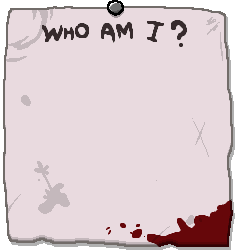
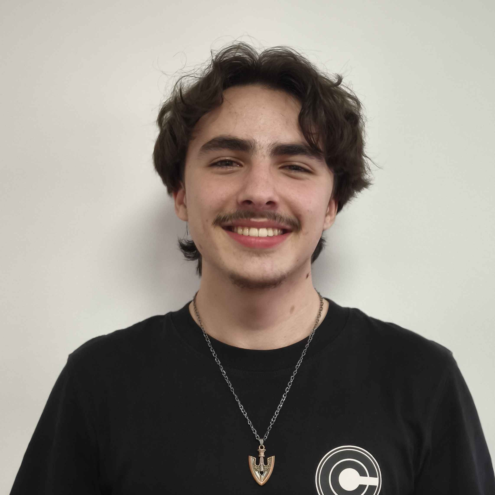

Je suis étudiant en Game design à l'ICAN Paris.
J'adore les jeux indé et les jeux qui touchent à la religion ou à la mytholgie comme The Binding of Isaac, Ultrakill ou la franchise Hades.
Dans mes travaux, j'essaie d'être le plus polyvalent possible en bossant sur le plus d'aspect possible du jeu tels le sound design ou la programmation.